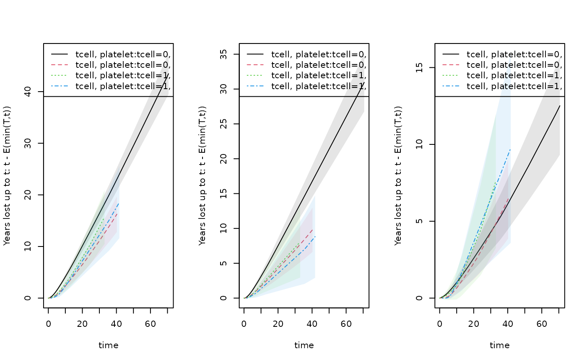

Average treatment effect (ATE) for Restricted mean survival and years lost of Competing risks
Klaus Holst & Thomas Scheike
2025-10-26
Source:vignettes/rmst-ate.Rmd
rmst-ate.RmdThe resmeanATE or resmeanIPCW/rmstIPCW functions can fit an exponential/linear link model with IPCW adjustment for a specific time-point for the resticted mean survival or years lost for competing risks. The function can be used for large data and is completely scalable, that is, linear in the data. The function can thus be used for large data. A nice feature is that influcence functions are computed and are available.
In addition and to summarize
- the censoring weights can be strata dependent
- predictions can be computed with standard errors
- computation time is linear in data
- including standard errors
- clusters can be given and then cluster corrected standard errors are computed
RMST
Regression for rmst outcome based on IPCW adjustment for censoring, thus solving the estimating equation This is done with the resmeanIPCW function. For fully saturated model with full censoring model this is equal to the integrals of the Kaplan-Meier estimators as illustrated below.
We can also compute the integral of the Kaplan-Meier or Cox based survival estimator to get the RMST (with the resmean.phreg function) .
For competing risks the years lost can be computed via cumulative
incidence functions (cif.yearslost) or as IPCW estimator since
For fully saturated model with full censoring model these estimators are
equivalent as illustrated below.
set.seed(101)
data(bmt); bmt$time <- bmt$time+runif(nrow(bmt))*0.001
# E( min(T;t) | X ) = exp( a+b X) with IPCW estimation
out <- resmeanIPCW(Event(time,cause!=0)~tcell+platelet+age,bmt,
time=50,cens.model=~strata(platelet),model="exp")
summary(out)
#> n events
#> 408 245
#>
#> 408 clusters
#> coeffients:
#> Estimate Std.Err 2.5% 97.5% P-value
#> (Intercept) 3.014321 0.065114 2.886700 3.141941 0.0000
#> tcell 0.106526 0.138268 -0.164473 0.377525 0.4410
#> platelet 0.247103 0.097337 0.056325 0.437880 0.0111
#> age -0.185936 0.043566 -0.271324 -0.100548 0.0000
#>
#> exp(coeffients):
#> Estimate 2.5% 97.5%
#> (Intercept) 20.37524 17.93403 23.1488
#> tcell 1.11241 0.84834 1.4587
#> platelet 1.28031 1.05794 1.5494
#> age 0.83033 0.76237 0.9043
### same as Kaplan-Meier for full censoring model
bmt$int <- with(bmt,strata(tcell,platelet))
out <- resmeanIPCW(Event(time,cause!=0)~-1+int,bmt,time=30,
cens.model=~strata(platelet,tcell),model="lin")
estimate(out)
#> Estimate Std.Err 2.5% 97.5% P-value
#> inttcell=0, platelet=0 13.60 0.8316 11.97 15.23 3.826e-60
#> inttcell=0, platelet=1 18.90 1.2696 16.41 21.39 3.997e-50
#> inttcell=1, platelet=0 16.19 2.4061 11.48 20.91 1.705e-11
#> inttcell=1, platelet=1 17.77 2.4536 12.96 22.58 4.463e-13
out1 <- phreg(Surv(time,cause!=0)~strata(tcell,platelet),data=bmt)
rm1 <- resmean.phreg(out1,times=30)
summary(rm1)
#> strata times rmean se.rmean lower upper
#> tcell=0, platelet=0 0 30 13.60295 0.8315418 12.06700 15.33439
#> tcell=0, platelet=1 1 30 18.90127 1.2693263 16.57021 21.56026
#> tcell=1, platelet=0 2 30 16.19121 2.4006185 12.10806 21.65131
#> tcell=1, platelet=1 3 30 17.76610 2.4421987 13.57008 23.25956
#> years.lost
#> tcell=0, platelet=0 16.39705
#> tcell=0, platelet=1 11.09873
#> tcell=1, platelet=0 13.80879
#> tcell=1, platelet=1 12.23390
## competing risks years-lost for cause 1
out <- resmeanIPCW(Event(time,cause)~-1+int,bmt,time=30,cause=1,
cens.model=~strata(platelet,tcell),model="lin")
estimate(out)
#> Estimate Std.Err 2.5% 97.5% P-value
#> inttcell=0, platelet=0 12.105 0.8508 10.438 13.773 6.162e-46
#> inttcell=0, platelet=1 6.884 1.1741 4.583 9.185 4.536e-09
#> inttcell=1, platelet=0 7.261 2.3533 2.648 11.873 2.033e-03
#> inttcell=1, platelet=1 5.780 2.0925 1.679 9.882 5.737e-03
## same as integrated cumulative incidence
rmc1 <- cif.yearslost(Event(time,cause)~strata(tcell,platelet),data=bmt,times=30,cause=1)
summary(rmc1)
#> $estimate
#> strata times intF_1 intF_2 se.intF_1 se.intF_2
#> tcell=0, platelet=0 0 30 12.105125 4.291930 0.8508102 0.6161439
#> tcell=0, platelet=1 1 30 6.884171 4.214556 1.1740988 0.9057028
#> tcell=1, platelet=0 2 30 7.260755 6.548034 2.3532867 1.9703340
#> tcell=1, platelet=1 3 30 5.780369 6.453535 2.0924946 2.0815225
#> total.years.lost lower_intF_1 upper_intF_1 lower_intF_2
#> tcell=0, platelet=0 16.39705 10.547328 13.893001 3.239330
#> tcell=0, platelet=1 11.09873 4.928092 9.616665 2.765857
#> tcell=1, platelet=0 13.80879 3.846790 13.704561 3.630616
#> tcell=1, platelet=1 12.23390 2.843285 11.751429 3.429661
#> upper_intF_2
#> tcell=0, platelet=0 5.686565
#> tcell=0, platelet=1 6.422055
#> tcell=1, platelet=0 11.809770
#> tcell=1, platelet=1 12.143507
## plotting the years lost for different horizon's and the two causes
par(mfrow=c(1,3))
plot(rm1,years.lost=TRUE,se=1)
## cause refers to column of cumhaz for the different causes
plot(rmc1,cause=1,se=1)
plot(rmc1,cause=2,se=1)
Based on the output from the IPCW estimators we can derive any measure of interest
estimate(out)
#> Estimate Std.Err 2.5% 97.5% P-value
#> inttcell=0, platelet=0 12.105 0.8508 10.438 13.773 6.162e-46
#> inttcell=0, platelet=1 6.884 1.1741 4.583 9.185 4.536e-09
#> inttcell=1, platelet=0 7.261 2.3533 2.648 11.873 2.033e-03
#> inttcell=1, platelet=1 5.780 2.0925 1.679 9.882 5.737e-03
measures <- function(p) {
ratio1 <- p[1]/p[2]; ratio2 <- p[2]/p[1]; dif1 <- p[4]-p[1]; dif2 <- p[3]-p[1]
m <- c(dif1,dif2,ratio1,ratio2)
return(m)
}
labs <- c("dif4-1","dif3-1","ratio 1/2","ratio 2/1")
estimate(out,f=measures,labels=labs)
#> Estimate Std.Err 2.5% 97.5% P-value
#> dif4-1 -6.3248 2.2589 -10.7520 -1.89748 5.111e-03
#> dif3-1 -4.8444 2.5024 -9.7489 0.06018 5.288e-02
#> ratio 1/2 1.7584 0.3244 1.1227 2.39414 5.924e-08
#> ratio 2/1 0.5687 0.1049 0.3631 0.77431 5.924e-08Average treatment effect
Computes average treatment effect for restricted mean survival and years lost in competing risks situation
dfactor(bmt) <- tcell~tcell
bmt$event <- (bmt$cause!=0)*1
out <- resmeanATE(Event(time,event)~tcell+platelet,data=bmt,time=40,treat.model=tcell~platelet)
summary(out)
#> n events
#> 408 241
#>
#> 408 clusters
#> coeffients:
#> Estimate Std.Err 2.5% 97.5% P-value
#> (Intercept) 2.852670 0.062493 2.730187 2.975153 0.0000
#> tcell1 0.021401 0.122907 -0.219493 0.262295 0.8618
#> platelet 0.303489 0.090758 0.125606 0.481372 0.0008
#>
#> exp(coeffients):
#> Estimate 2.5% 97.5%
#> (Intercept) 17.33400 15.33575 19.5926
#> tcell1 1.02163 0.80293 1.2999
#> platelet 1.35458 1.13383 1.6183
#>
#> Average Treatment effects (G-formula) :
#> Estimate Std.Err 2.5% 97.5% P-value
#> treat0 19.26223 0.95926 17.38212 21.14234 0.0000
#> treat1 19.67890 2.22777 15.31255 24.04526 0.0000
#> treat:1-0 0.41667 2.41067 -4.30815 5.14150 0.8628
#>
#> Average Treatment effects (double robust) :
#> Estimate Std.Err 2.5% 97.5% P-value
#> treat0 19.28131 0.95807 17.40352 21.15910 0.0000
#> treat1 20.34466 2.54101 15.36438 25.32494 0.0000
#> treat:1-0 1.06335 2.70979 -4.24773 6.37443 0.6948
out1 <- resmeanATE(Event(time,cause)~tcell+platelet,data=bmt,cause=1,time=40,
treat.model=tcell~platelet)
summary(out1)
#> n events
#> 408 157
#>
#> 408 clusters
#> coeffients:
#> Estimate Std.Err 2.5% 97.5% P-value
#> (Intercept) 2.806295 0.069619 2.669845 2.942745 0.0000
#> tcell1 -0.374065 0.247669 -0.859488 0.111358 0.1310
#> platelet -0.491736 0.164946 -0.815025 -0.168447 0.0029
#>
#> exp(coeffients):
#> Estimate 2.5% 97.5%
#> (Intercept) 16.54849 14.43773 18.9678
#> tcell1 0.68793 0.42338 1.1178
#> platelet 0.61156 0.44263 0.8450
#>
#> Average Treatment effects (G-formula) :
#> Estimate Std.Err 2.5% 97.5% P-value
#> treat0 14.53185 0.95707 12.65604 16.40767 0.0000
#> treat1 9.99693 2.37814 5.33587 14.65800 0.0000
#> treat:1-0 -4.53492 2.57516 -9.58213 0.51229 0.0782
#>
#> Average Treatment effects (double robust) :
#> Estimate Std.Err 2.5% 97.5% P-value
#> treat0 14.513742 0.958025 12.636048 16.391436 0.0000
#> treat1 9.365012 2.417032 4.627717 14.102307 0.0001
#> treat:1-0 -5.148730 2.597947 -10.240612 -0.056848 0.0475
out2 <- resmeanATE(Event(time,cause)~tcell+platelet,data=bmt,cause=2,time=40,
treat.model=tcell~platelet)
summary(out2)
#> n events
#> 408 84
#>
#> 408 clusters
#> coeffients:
#> Estimate Std.Err 2.5% 97.5% P-value
#> (Intercept) 1.8266090 0.1312181 1.5694263 2.0837918 0.0000
#> tcell1 0.4751558 0.2403839 0.0040121 0.9462996 0.0481
#> platelet -0.0090724 0.2168469 -0.4340845 0.4159397 0.9666
#>
#> exp(coeffients):
#> Estimate 2.5% 97.5%
#> (Intercept) 6.21278 4.80389 8.0349
#> tcell1 1.60826 1.00402 2.5762
#> platelet 0.99097 0.64786 1.5158
#>
#> Average Treatment effects (G-formula) :
#> Estimate Std.Err 2.5% 97.5% P-value
#> treat0 6.19518 0.71372 4.79631 7.59405 0.0000
#> treat1 9.96349 2.09256 5.86216 14.06482 0.0000
#> treat:1-0 3.76831 2.21654 -0.57602 8.11264 0.0891
#>
#> Average Treatment effects (double robust) :
#> Estimate Std.Err 2.5% 97.5% P-value
#> treat0 6.20484 0.71392 4.80559 7.60410 0.0000
#> treat1 10.30065 2.21700 5.95542 14.64588 0.0000
#> treat:1-0 4.09581 2.32897 -0.46889 8.66050 0.0786SessionInfo
sessionInfo()
#> R version 4.5.1 (2025-06-13)
#> Platform: x86_64-pc-linux-gnu
#> Running under: Ubuntu 24.04.3 LTS
#>
#> Matrix products: default
#> BLAS: /usr/lib/x86_64-linux-gnu/openblas-pthread/libblas.so.3
#> LAPACK: /usr/lib/x86_64-linux-gnu/openblas-pthread/libopenblasp-r0.3.26.so; LAPACK version 3.12.0
#>
#> locale:
#> [1] LC_CTYPE=C.UTF-8 LC_NUMERIC=C LC_TIME=C.UTF-8
#> [4] LC_COLLATE=C.UTF-8 LC_MONETARY=C.UTF-8 LC_MESSAGES=C.UTF-8
#> [7] LC_PAPER=C.UTF-8 LC_NAME=C LC_ADDRESS=C
#> [10] LC_TELEPHONE=C LC_MEASUREMENT=C.UTF-8 LC_IDENTIFICATION=C
#>
#> time zone: UTC
#> tzcode source: system (glibc)
#>
#> attached base packages:
#> [1] stats graphics grDevices utils datasets methods base
#>
#> other attached packages:
#> [1] mets_1.3.9
#>
#> loaded via a namespace (and not attached):
#> [1] cli_3.6.5 knitr_1.50 rlang_1.1.6
#> [4] xfun_0.53 textshaping_1.0.4 jsonlite_2.0.0
#> [7] listenv_0.9.1 future.apply_1.20.0 lava_1.8.1
#> [10] htmltools_0.5.8.1 ragg_1.5.0 sass_0.4.10
#> [13] rmarkdown_2.30 grid_4.5.1 evaluate_1.0.5
#> [16] jquerylib_0.1.4 fastmap_1.2.0 numDeriv_2016.8-1.1
#> [19] yaml_2.3.10 mvtnorm_1.3-3 lifecycle_1.0.4
#> [22] timereg_2.0.7 compiler_4.5.1 codetools_0.2-20
#> [25] fs_1.6.6 htmlwidgets_1.6.4 Rcpp_1.1.0
#> [28] future_1.67.0 lattice_0.22-7 systemfonts_1.3.1
#> [31] digest_0.6.37 R6_2.6.1 parallelly_1.45.1
#> [34] parallel_4.5.1 splines_4.5.1 Matrix_1.7-3
#> [37] bslib_0.9.0 tools_4.5.1 globals_0.18.0
#> [40] survival_3.8-3 pkgdown_2.1.3 cachem_1.1.0
#> [43] desc_1.4.3